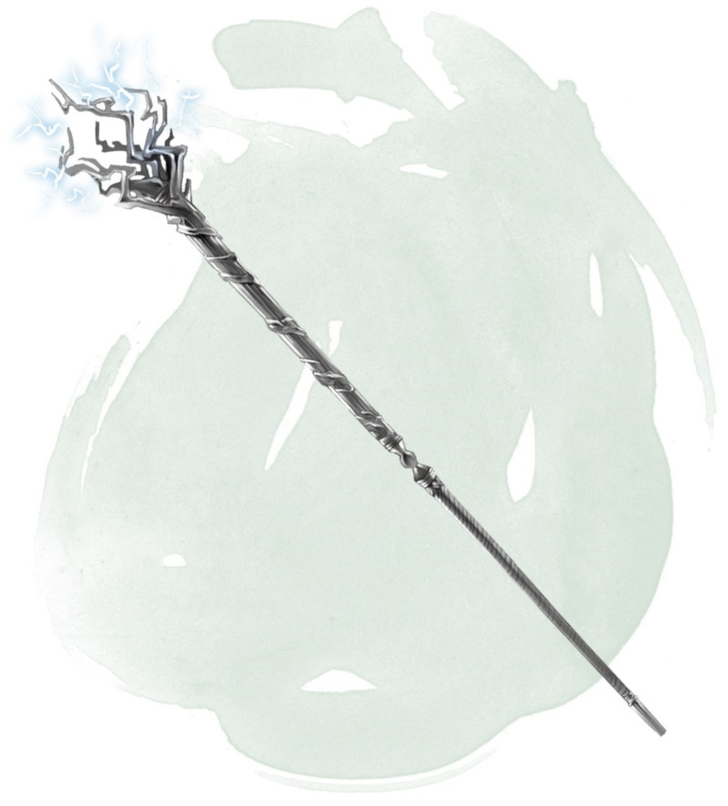

Bâton de tonnerre et de foudre
Bâton, très rare (nécessite un lien)
Ce bâton peut être manié comme un bâton magique qui octroie un bonus de +2 à l'attaque et aux dégâts. Il a également les propriétés supplémentaires suivantes. Quand une de ces propriétés est utilisée, elle ne peut plus l'être de nouveau avant la prochaine aube.
Foudre. Lorsque vous touchez avec une attaque au corps à corps en utilisant le bâton, vous pouvez infliger à la cible 2d6 dégâts de foudre supplémentaires.
Tonnerre. Lorsque vous touchez avec une attaque au corps à corps en utilisant le bâton, vous pouvez faire que le bâton émette un bruit de tonnerre audible jusqu'à 90 mètres. La cible que vous touchez doit réussir un jet de sauvegarde de Constitution DD 17 ou devenir étourdie jusqu'à la fin de votre prochain tour.
Éclair. Vous pouvez utiliser une action pour faire jaillir un éclair de la pointe du bâton. L'éclair est une ligne de 1,50 mètre de large et de 36 mètres de long. Chaque créature sur cette ligne doit effectuer un jet de sauvegarde de Dextérité DD 17, subissant 9d6 dégâts de foudre en cas d'échec, ou la moitié de ces dégâts en cas de réussite.
Coup de tonnerre. Vous pouvez utiliser une action pour faire éclater depuis le bâton un coup de tonnerre assourdissant, audible jusqu'à 180 mètres. Toute créature dans un rayon de 18 mètres autour de vous (vous excepté) doit alors effectuer un jet de sauvegarde de Constitution DD 17. En cas d'échec, une créature subit 2d6 dégâts de tonnerre et devient assourdie pendant 1 minute. En cas de réussite, une créature ne subit que la moitié de ces dégâts et elle n'est pas assourdie.
Fureur de l'orage. Vous pouvez utiliser une action pour utiliser les propriétés d'Éclair et de Coup de tonnerre en même temps. Cela ne dépense pas l'utilisation quotidienne de ces propriétés, uniquement l'utilisation de celle-ci.
Foudre. Lorsque vous touchez avec une attaque au corps à corps en utilisant le bâton, vous pouvez infliger à la cible 2d6 dégâts de foudre supplémentaires.
Tonnerre. Lorsque vous touchez avec une attaque au corps à corps en utilisant le bâton, vous pouvez faire que le bâton émette un bruit de tonnerre audible jusqu'à 90 mètres. La cible que vous touchez doit réussir un jet de sauvegarde de Constitution DD 17 ou devenir étourdie jusqu'à la fin de votre prochain tour.
Éclair. Vous pouvez utiliser une action pour faire jaillir un éclair de la pointe du bâton. L'éclair est une ligne de 1,50 mètre de large et de 36 mètres de long. Chaque créature sur cette ligne doit effectuer un jet de sauvegarde de Dextérité DD 17, subissant 9d6 dégâts de foudre en cas d'échec, ou la moitié de ces dégâts en cas de réussite.
Coup de tonnerre. Vous pouvez utiliser une action pour faire éclater depuis le bâton un coup de tonnerre assourdissant, audible jusqu'à 180 mètres. Toute créature dans un rayon de 18 mètres autour de vous (vous excepté) doit alors effectuer un jet de sauvegarde de Constitution DD 17. En cas d'échec, une créature subit 2d6 dégâts de tonnerre et devient assourdie pendant 1 minute. En cas de réussite, une créature ne subit que la moitié de ces dégâts et elle n'est pas assourdie.
Fureur de l'orage. Vous pouvez utiliser une action pour utiliser les propriétés d'Éclair et de Coup de tonnerre en même temps. Cela ne dépense pas l'utilisation quotidienne de ces propriétés, uniquement l'utilisation de celle-ci.
Dungeon Master´s Guide (SRD)
